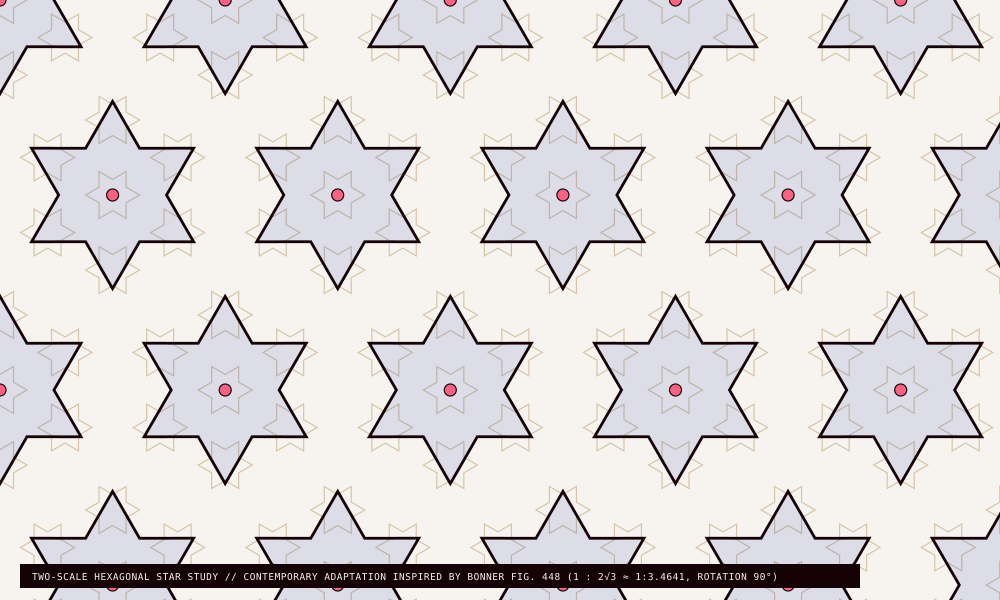
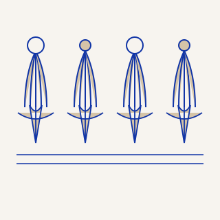
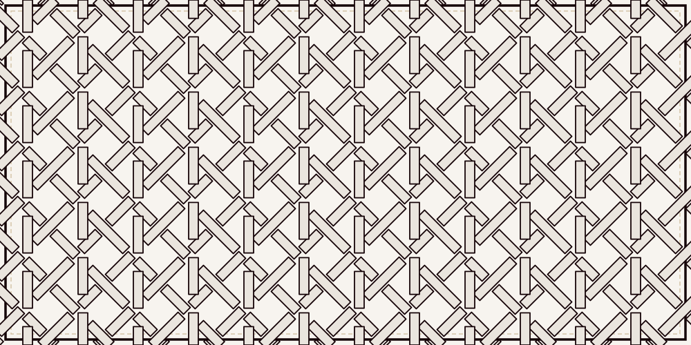

COLLECTION / GEOMETRY
Patterns of connection
Graphic studies for an editorial opening, followed by calm records.
See records →GMD / CODED DIRECTION BOARD · OCTOBER 2026
Eight distinct section studies bring the Tavus material, typography and hard depth into film, reading and data. The controls below are working component examples; the records are illustrative.
GMD / CINEMA
One still can open a trail through credits, places, writing and memory. The full-object route stays beside the shaped view.
Illustrative film record · review image rights before reuse
Unequal bays let media and metadata share a grid. The reading order stays linear; the aperture never clips a title or action.

Graphic studies for an editorial opening, followed by calm records.
See records →Credits and source notes sit in a rectangular bay.
“A collection becomes useful when its links remain visible.”Open reading →
Eight sectors frame an optional visual overview. The adjacent list holds every link in an ordinary, keyboard-friendly order.
Egyptian register art creates a threshold. Source, caption and related entities stay outside the decorative band.
KAYFFA / ESSAY SPECIMEN
A cultural record becomes richer when its context can be followed, questioned and cited.
This illustrative article shows how a long-form page can pair a restrained reading measure with visible metadata. The decorative rail separates chapters without interrupting the text or focus path.

↗Egyptian booklet, PDF pp. 12–16. This register is a contemporary interpretation, not an artifact facsimile. Validate attribution before promotion.

A graphic opening invites exploration, then gives way to a quiet selected record.
The selected reading surface carries the text, with related information ready when needed.
Person links expose relationships while keeping the main reading measure stable.
Source references, interpretation status and reuse notes belong with the record.
A patterned edge resolves into a searchable, sortable index. Export uses the rows currently shown, with explicit CSV and JSON formats.
| ID | Title | Family | Status | Action |
|---|
Small repeated controls use flat dividers. Primary actions retain a hard edge; validation and feedback stay explicit.
Compare the two densities, then inspect their shared control behavior. This specimen is a review tool, not a product claim.
Large display type, a raised action and room for an image or long story.